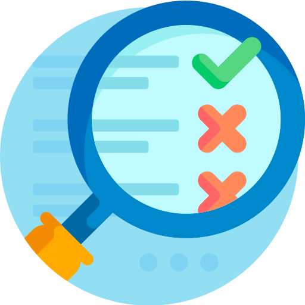

Decouvrire mes competences
En informatique:
HTML
CSS
Javascript
Langage R
Python
En medecine:

Examen clinique

Médecin généraliste diplômé de l’Université Abderrahmane Mira de Béjaïa, j’ai exercé au sein d’un établissement de santé publique en Algérie, où j’ai assuré la prise en charge globale de patients, participé à
des campagnes de prévention et collaboré à des actions de santé publique. Mon internat hospitalier m’a permis d’acquérir une expérience diversifiée dans plusieurs spécialités, telles que la pédiatrie, la gynécologie-obstétrique, l’ORL et la néphrologie.
Actuellement en Master 1 d’Informatique Biomédicale à l’Université Sorbonne Paris Nord, je me spécialise dans les technologies de la santé et la gestion des données médicales. Curieux, rigoureux et doté d’un fort esprit analytique, je m’intéresse aux projets qui allient médecine, informatique et innovation.
Mon objectif professionnel est de contribuer activement à la transformation numérique du secteur de la santé, en participant au développement de solutions intelligentes qui améliorent le parcours de soins, la qualité des services médicaux et la prise de décision clinique.
En parallèle, j’ai également enrichi mes compétences pédagogiques en accompagnant des élèves en sciences durant plusieurs années, renforçant ainsi mes capacités de vulgarisation, d’adaptation et de transmission des savoirs.
ü߆ Testez vos connaissances en m√©decine avec Vrai ou Faux, un mini-jeu interactif qui vous met au d√©fi avec des affirmations m√©dicales √† valider‚Ķ ou pas ! Mais attention, le chrono tourne ‚è±Ô∏è !
Conçu pour rendre l’apprentissage plus fun, ce jeu vous permet de jouer à tout moment, suivre vos progrès et vous comparer aux autres. Que vous soyez étudiant ou juste curieux, vous allez adorer apprendre en jouant.
Créez un compte ou connectez-vous pour commencer. C’est simple, rapide et motivant. Prêt à relever le défi ?